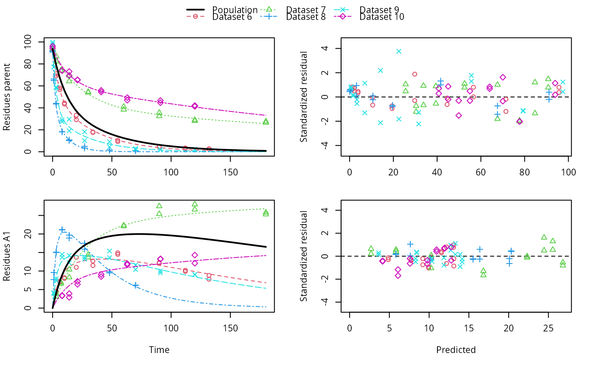

This function uses saemix::saemix() as a backend for fitting nonlinear mixed
effects models created from mmkin row objects using the Stochastic Approximation
Expectation Maximisation algorithm (SAEM).
saem(object, control, ...) # S3 method for mmkin saem( object, control = list(displayProgress = FALSE, print = FALSE, save = FALSE, save.graphs = FALSE), cores = 1, verbose = FALSE, suppressPlot = TRUE, ... ) saemix_model(object, cores = 1, verbose = FALSE, ...) saemix_data(object, verbose = FALSE, ...)
Arguments
| object | An mmkin row object containing several fits of the same mkinmod model to different datasets |
|---|---|
| control | Passed to saemix::saemix |
| ... | Further parameters passed to saemix::saemixData and saemix::saemixModel. |
| cores | The number of cores to be used for multicore processing using
|
| verbose | Should we print information about created objects? |
| suppressPlot | Should we suppress any plotting that is done by the saemix function? |
Value
An S3 object of class 'saem.mmkin', containing the fitted saemix::SaemixObject as a list component named 'so'.
An saemix::SaemixModel object.
An saemix::SaemixData object.
Details
An mmkin row object is essentially a list of mkinfit objects that have been obtained by fitting the same model to a list of datasets using mkinfit.
Starting values for the fixed effects (population mean parameters, argument
psi0 of saemix::saemixModel() are the mean values of the parameters found
using mmkin.
See also
Examples
# \dontrun{ ds <- lapply(experimental_data_for_UBA_2019[6:10], function(x) subset(x$data[c("name", "time", "value")])) names(ds) <- paste("Dataset", 6:10) f_mmkin_parent_p0_fixed <- mmkin("FOMC", ds, cores = 1, state.ini = c(parent = 100), fixed_initials = "parent", quiet = TRUE) f_saem_p0_fixed <- saem(f_mmkin_parent_p0_fixed)#> Running main SAEM algorithm #> [1] "Mon Nov 9 09:03:11 2020" #> .... #> Minimisation finished #> [1] "Mon Nov 9 09:03:13 2020"f_mmkin_parent <- mmkin(c("SFO", "FOMC", "DFOP"), ds, quiet = TRUE) f_saem_sfo <- saem(f_mmkin_parent["SFO", ])#> Running main SAEM algorithm #> [1] "Mon Nov 9 09:03:14 2020" #> .... #> Minimisation finished #> [1] "Mon Nov 9 09:03:16 2020"f_saem_fomc <- saem(f_mmkin_parent["FOMC", ])#> Running main SAEM algorithm #> [1] "Mon Nov 9 09:03:16 2020" #> .... #> Minimisation finished #> [1] "Mon Nov 9 09:03:18 2020"f_saem_dfop <- saem(f_mmkin_parent["DFOP", ])#> Running main SAEM algorithm #> [1] "Mon Nov 9 09:03:19 2020" #> .... #> Minimisation finished #> [1] "Mon Nov 9 09:03:22 2020"# The returned saem.mmkin object contains an SaemixObject, therefore we can use # functions from saemix library(saemix)#> #>#> Likelihoods computed by importance sampling#> AIC BIC #> 1 624.2428 622.2900 #> 2 467.7644 465.0305 #> 3 491.3541 487.8391#> Plotting convergence plots#> Plotting individual fits#> Simulating data using nsim = 1000 simulated datasets #> Computing WRES and npde . #> Plotting npde#> --------------------------------------------- #> Distribution of npde: #> mean= -0.01736 (SE= 0.098 ) #> variance= 0.8562 (SE= 0.13 ) #> skewness= 0.513 #> kurtosis= 1.202 #> --------------------------------------------- #> #> Statistical tests #> Wilcoxon signed rank test : 0.652 #> Fisher variance test : 0.338 #> SW test of normality : 0.0757 . #> Global adjusted p-value : 0.227 #> --- #> Signif. codes: '***' 0.001 '**' 0.01 '*' 0.05 '.' 0.1 #> ---------------------------------------------#> Performing simulations under the model. #> Plotting VPC #> Method used for VPC: binning by quantiles on X , dividing into the following intervals #> Interval Centered.On #> 1 (-1,3] 1.3 #> 2 (3,8] 7.4 #> 3 (8,14] 13.2 #> 4 (14,21] 20.5 #> 5 (21,37.7] 29.5 #> 6 (37.7,60] 50.4 #> 7 (60,90] 76.6 #> 8 (90,120] 109.0 #> 9 (120,180] 156.0f_mmkin_parent_tc <- update(f_mmkin_parent, error_model = "tc") f_saem_fomc_tc <- saem(f_mmkin_parent_tc["FOMC", ])#> Running main SAEM algorithm #> [1] "Mon Nov 9 09:03:24 2020" #> .... #> Minimisation finished #> [1] "Mon Nov 9 09:03:29 2020"#> Likelihoods computed by importance sampling#> AIC BIC #> 1 467.7644 465.0305 #> 2 469.4862 466.3617#>#>#># The following fit uses analytical solutions for SFO-SFO and DFOP-SFO, # and compiled ODEs for FOMC, both are fast f_mmkin <- mmkin(list( "SFO-SFO" = sfo_sfo, "FOMC-SFO" = fomc_sfo, "DFOP-SFO" = dfop_sfo), ds, quiet = TRUE) # These take about five seconds each on this system, as we use # analytical solutions written for saemix. When using the analytical # solutions written for mkin this took around four minutes f_saem_sfo_sfo <- saem(f_mmkin["SFO-SFO", ])#> Running main SAEM algorithm #> [1] "Mon Nov 9 09:03:31 2020" #> .... #> Minimisation finished #> [1] "Mon Nov 9 09:03:36 2020"f_saem_dfop_sfo <- saem(f_mmkin["DFOP-SFO", ])#> Running main SAEM algorithm #> [1] "Mon Nov 9 09:03:37 2020" #> .... #> Minimisation finished #> [1] "Mon Nov 9 09:03:46 2020"#> saemix version used for fitting: 3.1.9000 #> mkin version used for pre-fitting: 0.9.50.4 #> R version used for fitting: 4.0.3 #> Date of fit: Mon Nov 9 09:03:47 2020 #> Date of summary: Mon Nov 9 09:03:47 2020 #> #> Equations: #> d_parent/dt = - ((k1 * g * exp(-k1 * time) + k2 * (1 - g) * exp(-k2 * #> time)) / (g * exp(-k1 * time) + (1 - g) * exp(-k2 * time))) #> * parent #> d_A1/dt = + f_parent_to_A1 * ((k1 * g * exp(-k1 * time) + k2 * (1 - g) #> * exp(-k2 * time)) / (g * exp(-k1 * time) + (1 - g) * #> exp(-k2 * time))) * parent - k_A1 * A1 #> #> Data: #> 170 observations of 2 variable(s) grouped in 5 datasets #> #> Model predictions using solution type analytical #> #> Fitted in 9.758 s using 300, 100 iterations #> #> Variance model: Constant variance #> #> Mean of starting values for individual parameters: #> parent_0 log_k_A1 f_parent_qlogis log_k1 log_k2 #> 93.8101519 -9.7647455 -0.9711148 -1.8799371 -4.2708142 #> g_qlogis #> 0.1356441 #> #> Fixed degradation parameter values: #> None #> #> Results: #> #> Likelihood computed by importance sampling #> AIC BIC logLik #> 841.3208 836.2435 -407.6604 #> #> Optimised, transformed parameters with symmetric confidence intervals: #> est. lower upper #> parent_0 93.7514328489 91.113651 96.3892150 #> log_k_A1 -6.1262333211 -8.432492 -3.8199749 #> f_parent_qlogis -0.9739851652 -1.371984 -0.5759863 #> log_k1 -2.4818388836 -3.746899 -1.2167788 #> log_k2 -3.6138616567 -5.294149 -1.9335743 #> g_qlogis -0.0004613666 -1.063179 1.0622564 #> #> Correlation: #> prnt_0 lg__A1 f_prn_ log_k1 log_k2 #> log_k_A1 -0.013 #> f_parent_qlogis -0.025 0.050 #> log_k1 0.030 0.000 -0.005 #> log_k2 0.013 0.005 -0.003 0.037 #> g_qlogis -0.068 -0.016 0.011 -0.181 -0.181 #> #> Random effects: #> est. lower upper #> SD.parent_0 2.7857084 0.7825105 4.7889063 #> SD.log_k_A1 2.1412505 0.4425207 3.8399803 #> SD.f_parent_qlogis 0.4463087 0.1609059 0.7317116 #> SD.log_k1 1.4097204 0.5240566 2.2953842 #> SD.log_k2 1.8739067 0.6979362 3.0498773 #> SD.g_qlogis 0.4559301 -0.8149852 1.7268453 #> #> Variance model: #> est. lower upper #> a.1 1.882757 1.665681 2.099832 #> #> Backtransformed parameters with asymmetric confidence intervals: #> est. lower upper #> parent_0 93.751432849 9.111365e+01 96.38921497 #> k_A1 0.002184795 2.176784e-04 0.02192835 #> f_parent_to_A1 0.274086887 2.022995e-01 0.35985666 #> k1 0.083589373 2.359079e-02 0.29618269 #> k2 0.026947583 5.020885e-03 0.14463032 #> g 0.499884658 2.567024e-01 0.74312150 #> #> Resulting formation fractions: #> ff #> parent_A1 0.2741 #> parent_sink 0.7259 #> #> Estimated disappearance times: #> DT50 DT90 DT50back DT50_k1 DT50_k2 #> parent 13.91 60.89 18.33 8.292 25.72 #> A1 317.26 1053.91 NA NA NA# Using a single core, the following takes about 6 minutes, using 10 cores # it is slower instead of faster #f_saem_fomc <- saem(f_mmkin["FOMC-SFO", ], cores = 1) # }